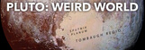

The solar system is made up of the sun and everything that orbits around it, including planets, moons, asteroids, comets and meteoroids. It extends from the sun, called Sol by the ancient Romans, and goes past the four inner planets, through the Asteroid Belt to the four gas giants and on to the disk-shaped Kuiper Belt and far beyond to the giant, spherical Oort Cloud and the teardrop-shaped heliopause. Scientists estimate that the edge of the solar system is about 9 billion miles (15 billion kilometers) from the sun.
Many scientists think our solar system formed from a giant, rotating cloud of gas and dust known as the solar nebula.
As the nebula collapsed because of its gravity, it spun faster and flattened into a disk. Most of the material was pulled toward the center to form the sun. Other particles within the disk collided and stuck together to form asteroid-sized objects named as planetesimals,
some of which combined to become the asteroids, comets, moons and planets.
The solar wind from the sun was so powerful that it swept away most of the lighter elements,
such as hydrogen and helium, from the innermost planets, leaving behind mostly small, rocky worlds. The solar wind was much weaker in the outer regions,
however, resulting in gas giants made up mostly of hydrogen and helium.
| S.no | Image | Name | Discovery | Named for | Diameter | Orbit | Day |
|---|---|---|---|---|---|---|---|
| 1 | Mercury | Known to the ancients and visible to the naked eye | Messenger of the Roman gods | 3,031 miles (4,878 km) | 88 Earth days | 58.6 Earth days | |
| 2 | Venus | Known to the ancients and visible to the naked eye | Roman goddess of love and beauty | 7,521 miles (12,104 km) | 225 Earth days | 241 Earth days | |
| 3 | Earth | Unknown | Unknown | 7,926 miles (12,760 km) | 365.24 days | 23 hours, 56 minutes | |
| 4 | Mars | Known to the ancients and visible to the naked eye | Roman god of war | 4,217 miles (6,787 km) | 687 Earth days | Just more than one Earth day (24 hours, 37 minutes) | |
| 5 | Jupiter | Known to the ancients and visible to the naked eye | Ruler of the Roman gods | 88,730 miles (428,400 km) | 11.9 Earth years | 9.8 Earth hours | |
| 6 | Saturn | Known to the ancients and visible to the naked eye | Roman god of agriculture | 74,900 miles (120,500 km) | 29.5 Earth years | About 10.5 Earth hours | |
| 7 | Uranus | 1781 by William Herschel (was thought previously to be a star) | Personification of heaven in ancient myth | 31,763 miles (51,120 km) | 84 Earth years | 18 Earth hours | |
| 8 | Neptune | 1846 | Roman god of water | 30,775 miles (49,530 km) | 165 Earth years | 19 Earth hours | |
| 9 |  | Pluto (Dwarf Planet) | 1930 by Clyde Tombaugh | Roman god of the underworld, Hades | 1,430 miles (2,301 km) | 248 Earth years | 6.4 Earth day |